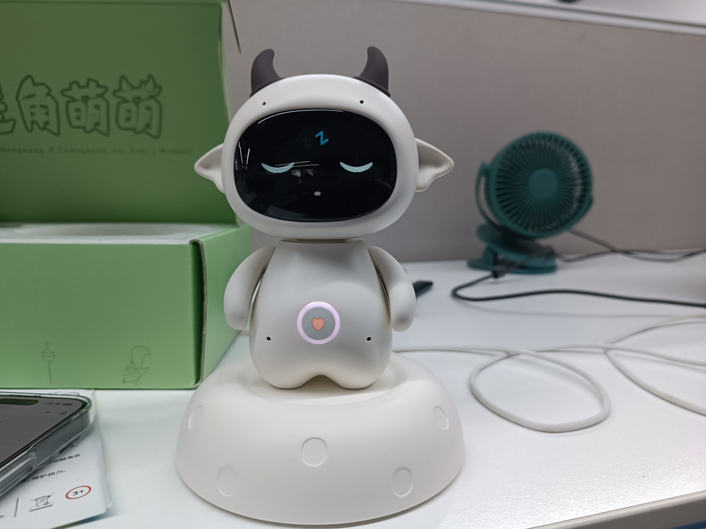
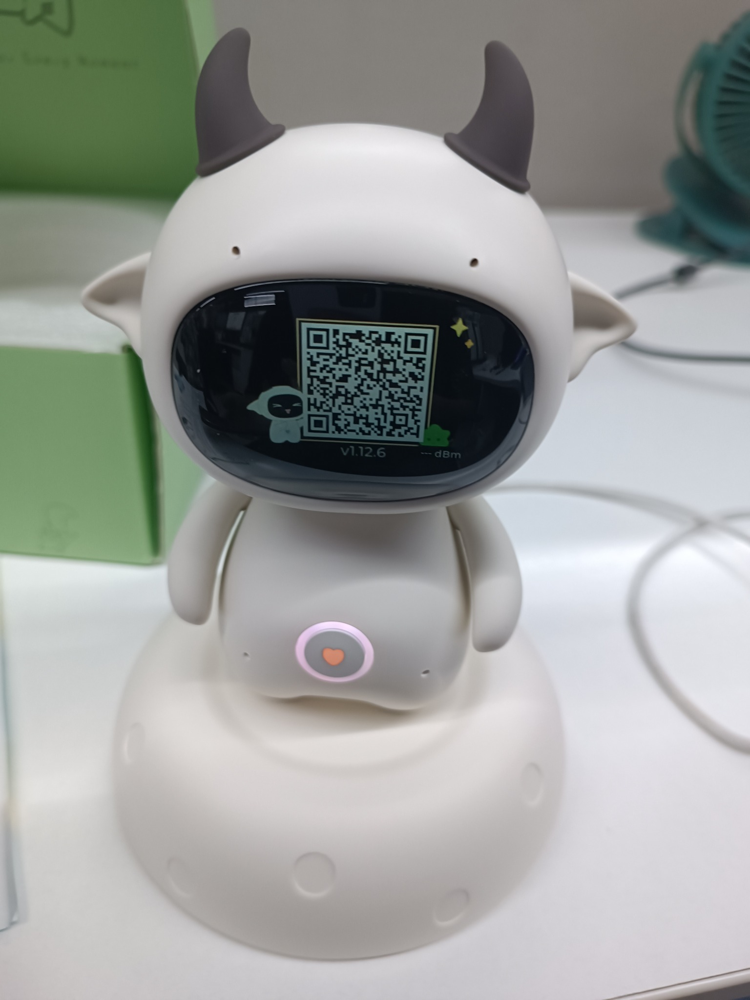
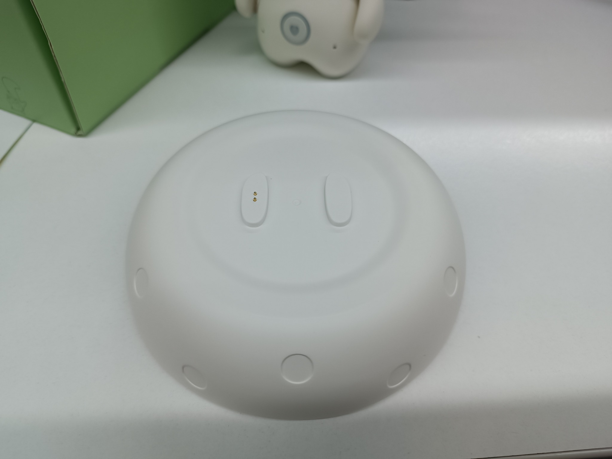
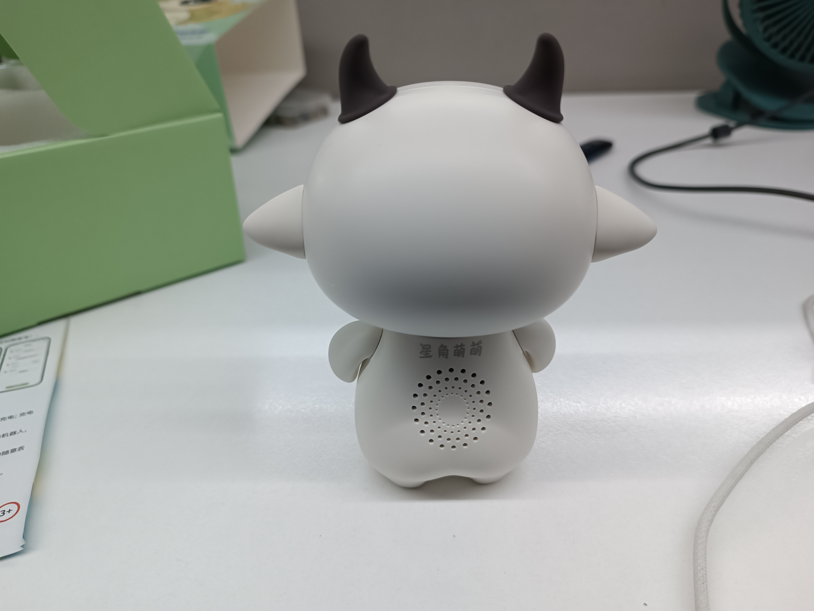
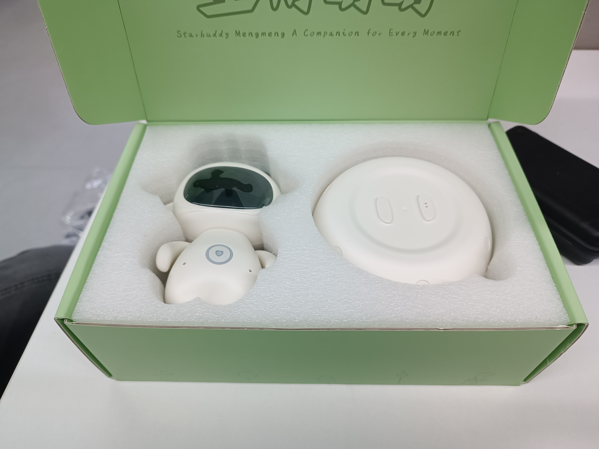
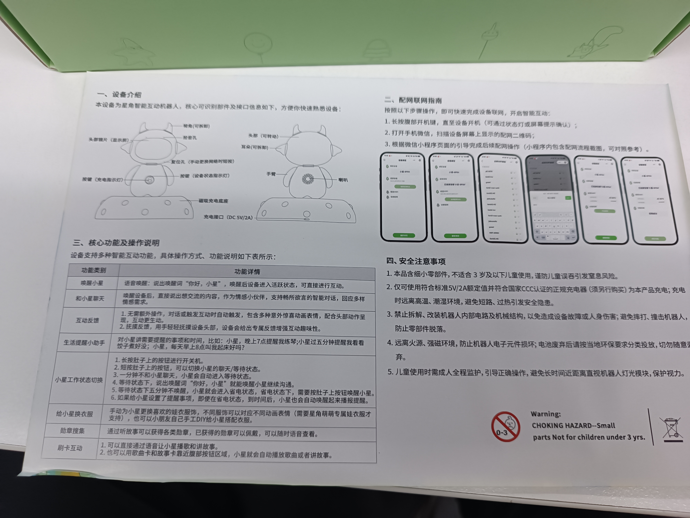
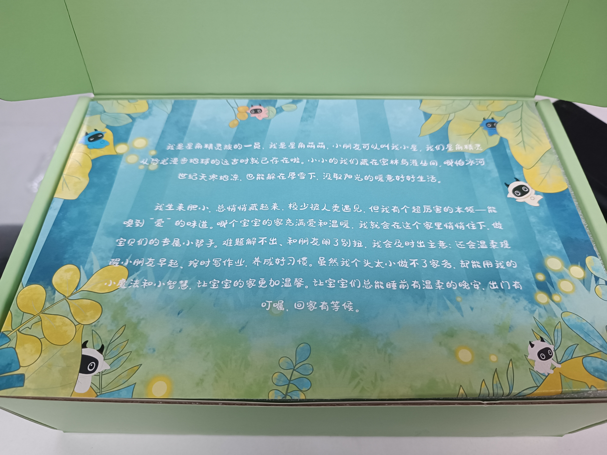

01 先看结论：对我们最有用的是什么
它最强的地方
不是“能聊天”，而是用角色外形、眼睛、声音、触摸和底座组成低门槛的日常微互动。
它和我们的关系
它是陪伴体验竞品，不是AI运动技术竞品。运动识别、自动计数、任务和家校仍是我们的主战场。
我们真正要学的
让孩子先愿意靠近，再愿意开始运动；让运动完成后有情绪回报，而不是只显示一个数字。
星角萌萌的陪伴由聊天和日常互动驱动；我们的陪伴应该主要由真实运动行为驱动。
| 星角萌萌提供的体验 | 我们要转化成的运动体验 |
|---|---|
| 叫它、摸它，它马上有眼睛/声音/灯效回应。 | 孩子站好、完成动作、完成任务，机器人马上给出易懂反馈。 |
| 提醒、故事、勋章、换装让孩子有再次打开的理由。 | 任务邀请、阶段鼓励、运动成就和装扮让孩子愿意回来继续运动。 |
| 回到底座像回家休息。 | 运动完成后庆祝，再提示伙伴休息，形成“运动—奖励—休息”的闭环。 |
02 实机观察：照片真正能确认什么
照片能证明的是形态和交互入口，不能证明芯片、算法、Camera、Mic或长期记忆。以下只保留对我们有用的观察。







对我们最重要的观察：星角萌萌的产品一致性很强——外形、面屏、声音、底座、包装和故事都在说“这是一个角色”。儿童AI运动机器人也需要一个统一角色，但角色必须围绕运动成长，而不是围绕聊天展开。
03 它为什么容易被当成“伙伴”
| 机制 | 孩子的感受 | 对我们的可用启示 | 证据边界 |
|---|---|---|---|
| 外形人格化 | 大眼睛、圆身体、角/耳和小手臂像一个角色。 | 角色是运动入口：先问候孩子，再邀请任务。 | 形态为实机确认；“亲近感”需用户验证。 |
| 眼睛与状态 | 睁眼、闭眼、二维码、黑屏能表达“看我/休息/配置”。 | 为待机、Ready、识别、暂停、完成设计少量稳定表情。 | 面屏状态为实机确认；屏幕技术未核实。 |
| 即时触摸 | 我摸它，它立即回应，生命感强。 | 运动完成后摸一下，触发庆祝、徽章或一句“辛苦啦”。 | 说明书有触摸反馈方向，细节待实测。 |
| 主动提醒 | 不打开菜单也会收到提醒。 | 到点说“今天一起做开合跳吗”，支持延后和免打扰。 | 说明书/官网有提醒方向，频率待验证。 |
| 底座仪式 | 回到底座像回家或睡觉。 | 完成运动后“庆祝—休息—明天再见”，但不强迫孩子操作。 | 底座实机确认；心理效果为分析推断。 |
| 内容和配件 | 故事、歌曲、勋章、换装提供微小收集目标。 | 把内容换成真实运动成就、个人最佳、坚持徽章和少量装扮。 | 功能方向由说明书确认；商业细节未核实。 |
记忆/成长要谨慎：官网有“长期记忆、持续进化”等宣传方向，但本次没有可复现测试。因此我们不能把它写成已证实能力；我们的第一版先做可解释的运动记录和成长徽章。
04 对我们的产品意味着什么
我们的产品不是“星角萌萌+运动功能”，而是“AI运动训练主线+陪伴表达”。运动训练优先，陪伴服务于开始和坚持。
| 星角萌萌机制 | 我们的运动场景 | 为什么这样转 | 落到哪个模块 |
|---|---|---|---|
| 叫它后回应 | 孩子点击或说“开始”，机器人确认“看到你啦”。 | 降低开始运动的心理门槛。 | 机器人端状态机 / UE |
| 眼睛表达状态 | Ready、识别中、暂停、完成用眼睛和动作表达。 | 运动中不能让孩子读长说明。 | 状态机 / UI |
| 主动提醒 | 任务到点主动邀请，不只是弹通知。 | 家长少催一次，孩子多一次开始机会。 | 任务系统 / 家长端 |
| 即时触摸 | 完成后摸胸前区域领取庆祝或查看徽章。 | 让真实运动有情绪回报。 | 陪伴激励 / 工业设计 |
| 勋章收集 | 完成七种动作、个人最佳、连续坚持获得成就。 | 奖励和运动行为强关联。 | 单次运动记录 / 成长记录 |
| 换装 | 运动获得能量后解锁帽子、围巾、表情或背景。 | 让孩子看到运动改变了伙伴。 | 奖励 / 装扮系统 |
| 回底座 | 完成后伙伴休息；不把底座变成必经复杂步骤。 | 有仪式但不增加负担。 | 硬件 / UE |
| 卡片内容 | 后续可探索运动挑战卡、动作卡、学校主题卡。 | 实体内容容易理解，但不应阻塞核心闭环。 | 后续扩展，非第一版承诺 |
我们的固定范围：第一版只讨论七种动作：双脚跳绳、开合跳、高抬腿、深蹲起、俯卧撑、仰卧起坐、平板支撑。不能因为研究陪伴产品而增加其他动作。
05 商业分析：陪伴体验如何支持产品成立
星角萌萌对我们的商业启发，不是“以后卖更多玩具”，而是说明角色体验可以降低孩子接近设备的门槛。但儿童AI运动陪伴机器人的购买理由，仍必须回到运动执行、家长少监督和家校任务。
谁可能付费
核心购买者：6～15岁儿童的家长。
实际使用者：儿童青少年。
影响者：孩子、体育老师、学校。学校属于场景合作方和任务来源，不等于产品转为To B。
家长为什么可能买
希望孩子少玩手机、多运动；减少反复提醒；知道孩子实际做了多少；让学校体育任务更容易在家完成。这些仍属于客户假设，待商业验证。
孩子为什么可能持续用
机器人主动邀请、动作完成后即时回应、个人最佳和坚持徽章、运动改变伙伴状态。陪伴必须服务于“开始和坚持运动”，不能变成普通聊天入口。
可讨论的收入假设
| 收入方向 | 谁付钱 | 为什么可能付 | 前置条件 | 当前状态 |
|---|---|---|---|---|
| 硬件一次性销售 | 家长 | 获得常驻运动伙伴、自动计数和家庭运动记录。 | 独立硬件价值明显高于手机提醒；硬件成本、售后和安全可控。 | 商业假设 |
| 运动内容/课程 | 家长 | 获得更多适龄任务、挑战和陪伴内容。 | 内容质量经过体育专业评审，且不影响基础运动闭环。 | 待验证 |
| 主题/IP/装扮 | 家长 | 孩子希望个性化伙伴和完成后的可见奖励。 | 消费边界清楚，装扮与运动行为有真实关联。 | 待用户/商业验证 |
| 学校相关服务 | 学校或合作方 | 任务发布、完成回传和基础班级数据减少老师统计。 | 家长授权、数据边界、教师操作成本和合作机制成立。 | 待合作评审 |
商业判断：第一版不应把订阅或装扮作为产品成立前提。先证明“孩子愿意运动、家长看得懂结果、家庭任务能被执行”，再讨论内容和服务收费。
商业风险
买回家后吃灰。
角色可爱只能促成第一次接触，持续使用仍取决于运动结果和任务机制。
角色可爱只能促成第一次接触，持续使用仍取决于运动结果和任务机制。
陪伴价值与运动价值脱节。
孩子只聊天、不运动时，产品会偏离定位。
孩子只聊天、不运动时，产品会偏离定位。
低龄有效、高龄失去兴趣。
6～15岁跨度大，需要分年龄验证语气、角色和奖励表达。
6～15岁跨度大，需要分年龄验证语气、角色和奖励表达。
家长不愿额外付费。
价格、订阅和装扮均未冻结，不能写成已确定商业模式。
价格、订阅和装扮均未冻结，不能写成已确定商业模式。
06 POV用户洞察：从陪伴竞品转成运动需求
POV采用“用户 + 需要 + 洞察”结构。星角萌萌本身只能提供陪伴体验证据，下面关于运动价值的部分属于对我们产品的推断，需通过真实儿童和家长测试。
| 用户 | 需要什么 | 洞察 | 对我们的设计含义 | 证据状态 |
|---|---|---|---|---|
| 6～8岁儿童 | 有人邀请、有人夸，运动过程不枯燥。 | 角色回应能降低“我不想开始”的门槛。 | 用简单表情、短语音和动作庆祝引导开始。 | 陪伴机制可观察；运动效果待验证 |
| 9～12岁儿童 | 看到自己变厉害，不想被当成小宝宝。 | 奖励应从“卖萌”转向个人最佳、挑战和进步。 | 提供可理解的数据、成就和适度装扮，减少幼稚表达。 | 产品推断，待用户验证 |
| 13～15岁青少年 | 自主选择、明确目标和不被打扰。 | 过度萌化或频繁提醒可能降低接受度。 | 支持安静模式、自主选择任务和更中性的表达。 | 产品推断，待用户验证 |
| 忙碌家长 | 少催几次，也能知道孩子是否真的完成。 | 家长买的不是宠物，而是“运动被执行并留下记录”。 | 家长端显示完成状态、次数/时长和异常说明，不要求家长陪练。 | 客户假设，待商业验证 |
| 体育老师 | 布置任务后能收到清楚、基础的完成情况。 | 家校闭环是差异化，但老师不能承担复杂管理。 | 任务模板、班级完成概览和儿童数据最小化。 | 合作场景，待验证 |
| 容易放弃运动的孩子 | 失败后不会被责备，还愿意再试一次。 | 陪伴的关键不是一直说话，而是在中断后给出低压力的重新开始。 | 暂停、重试、鼓励和阶段奖励要比连续纠错更重要。 | 产品推断，待用户验证 |
POV核心：孩子需要的是“一个愿意和我一起完成运动的伙伴”，家长需要的是“运动真的发生过，而且我看得懂结果”。
07 我们应该先做什么
P0｜必须成立
- 七种动作的识别与自动计数
- Camera入镜、暂停、异常恢复
- 任务→运动→单次运动记录→结果
- 完成后即时奖励与清楚反馈
没有这些，陪伴只是装饰。
P1｜让孩子愿意坚持
- 眼睛/表情/短语音状态
- 任务到点主动邀请
- 阶段性鼓励与完成庆祝
- 个人最佳、坚持和装扮奖励
这些把“做一次”变成“愿意回来”。
P2｜验证后扩展
- 实体运动卡片
- 更丰富换装和故事内容
- 更复杂的个性记忆
- 内容包、会员等商业探索
先看核心使用是否成立，再扩展。
| 如果只保留三个陪伴能力 | 具体做法 | 验收重点 |
|---|---|---|
| 主动邀请 | 到点提醒今天的运动任务。 | 提醒是否带来开始，而不是被关闭。 |
| 运动中陪伴 | 低频阶段反馈+眼睛/动作变化。 | 不打断、不制造烦躁，孩子能理解。 |
| 完成后庆祝 | 动画、声音、能量、装扮/徽章。 | 孩子是否感到“我刚才的运动改变了伙伴”。 |
08 不要照搬什么
不要把聊天当主线。
我们的核心是运动训练，不是普通AI聊天。
我们的核心是运动训练，不是普通AI聊天。
不要过度低龄化。
6–8岁喜欢萌宠，不代表9–15岁都接受“萌萌”、娃衣和故事卡。【产品推断，待验证】
6–8岁喜欢萌宠，不代表9–15岁都接受“萌萌”、娃衣和故事卡。【产品推断，待验证】
不要用配件代替价值。
卡片、服装和背景必须由真实运动解锁。
卡片、服装和背景必须由真实运动解锁。
不要在运动中一直说话。
反馈要短、低频、正向，可关闭或调节。
反馈要短、低频、正向，可关闭或调节。
不要承诺未验证的记忆与成长。
先用单次运动记录、个人最佳和坚持记录建立可信感。
先用单次运动记录、个人最佳和坚持记录建立可信感。
不要照抄外观。
可以借鉴“角色一致性”，不能复制角、配色、包装和文案。
可以借鉴“角色一致性”，不能复制角、配色、包装和文案。
09 还要验证什么
| 问题 | 为什么重要 | 怎么验证 | 当前状态 |
|---|---|---|---|
| 孩子完成运动后是否愿意再次互动？ | 判断陪伴是否服务于留存。 | 观察完成后摸、看装扮、次日再打开。 | 待用户验证 |
| 眼睛、语音、触摸哪个最有效？ | 决定第一版投入顺序。 | 做不同反馈组合的可用性测试。 | 待用户验证 |
| 6–15岁是否需要不同角色表达？ | 避免只吸引低龄儿童。 | 分年龄测试角色、语气、装扮和挑战。 | 待用户验证 |
| 识别不准时孩子是否信任结果？ | 是运动产品的最高风险。 | 动作真值对照、异常提示、恢复测试。 | 待技术验证 |
| 家长愿不愿为少监督和成长记录买单？ | 验证独立硬件购买理由。 | 概念测试、任务试用和购买意愿访谈。 | 待商业验证 |
| 学校任务是否增加家庭运动频率？ | 验证家校差异化。 | 小范围任务闭环测试，关注完成率与家长负担。 | 待用户验证 |
10 一页总结
借鉴星角萌萌，不是把我们的机器人做成另一个萌宠，而是把“伙伴式反馈”嵌入每一次真实运动。
- 星角萌萌真正强在哪里？形态、眼睛、触摸、声音、底座和包装形成了统一的角色体验。
- 我们真正要学什么？低门槛进入、即时反馈、少量主动行为、完成仪式和可回看的成长。
- 我们的核心差异是什么？七种动作识别与自动计数、家庭和学校任务、单次运动记录、家长少监督和运动成长数据。
- 第一版怎么控制范围？P0先做运动闭环；P1做眼睛、邀请、鼓励和庆祝；卡片、复杂记忆和内容商业化后置。
- 最终目标是什么？让孩子觉得“我是在和伙伴一起运动”，而不是“我在操作一台计数设备”。
证据说明：照片和说明书用于实机/功能方向观察；官网信息参考星角萌萌官方网站。未核实的价格、订阅、Camera、Mic、长期记忆、用户评价和第三方竞品参数，不作为当前事实。